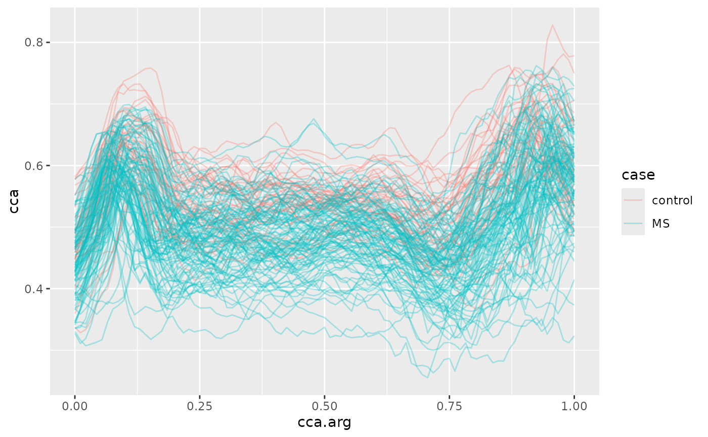

Fractional anisotropy (FA) tract profiles for the corpus callosum (cca)
and the right corticospinal tract (rcst) from a diffusion tensor imaging
(DTI) study of multiple sclerosis patients and healthy controls.
The original data in refund::DTI include additional variables (pasat,
Nscans, visit.time) that were not carried over here.
Format
A tibble with 382 rows and 6 columns:
- id
(numeric) Subject identifier.
- visit
(integer) Visit number.
- sex
(factor)
"male"or"female".- case
(factor)
"control"or"MS"(multiple sclerosis status).- cca
(
tfd_irreg) FA tract profiles for the corpus callosum (up to 93 evaluation points, domain 0–1).- rcst
(
tfd_irreg) FA tract profiles for the right corticospinal tract (up to 55 evaluation points, domain 0–1).
Source
Data are from the Johns Hopkins University and the Kennedy-Krieger Institute. Also available in a different format as refund::DTI.
Details
If you use this data as an example in written work, please include the following acknowledgment: "The MRI/DTI data were collected at Johns Hopkins University and the Kennedy-Krieger Institute."
References
Goldsmith, J., Bobb, J., Crainiceanu, C., Caffo, B., and Reich, D. (2011). Penalized Functional Regression. Journal of Computational and Graphical Statistics, 20(4), 830–851. doi:10.1198/jcgs.2010.10007
Goldsmith, J., Crainiceanu, C., Caffo, B., and Reich, D. (2012). Longitudinal Penalized Functional Regression for Cognitive Outcomes on Neuronal Tract Measurements. Journal of the Royal Statistical Society: Series C, 61(3), 453–469. doi:10.1111/j.1467-9876.2011.01031.x
See also
chf_df for another example dataset,
vignette("x04_Visualization", package = "tidyfun") for usage examples.
Other tidyfun datasets:
chf_df
Examples
dti_df
#> # A tibble: 382 × 6
#> id visit sex case cca
#> <dbl> <int> <fct> <fct> <tfd_irreg>
#> 1 1001 1 female control (0.000,0.49);(0.011,0.52);(0.022,0.54); ...
#> 2 1002 1 female control (0.000,0.47);(0.011,0.49);(0.022,0.50); ...
#> 3 1003 1 male control (0.000,0.50);(0.011,0.51);(0.022,0.54); ...
#> 4 1004 1 male control (0.000,0.40);(0.011,0.42);(0.022,0.44); ...
#> 5 1005 1 male control (0.000,0.40);(0.011,0.41);(0.022,0.40); ...
#> 6 1006 1 male control (0.000,0.45);(0.011,0.45);(0.022,0.46); ...
#> 7 1007 1 male control (0.000,0.55);(0.011,0.56);(0.022,0.56); ...
#> 8 1008 1 male control (0.000,0.45);(0.011,0.48);(0.022,0.50); ...
#> 9 1009 1 male control (0.000,0.50);(0.011,0.51);(0.022,0.52); ...
#> 10 1010 1 male control (0.000,0.46);(0.011,0.47);(0.022,0.48); ...
#> # ℹ 372 more rows
#> # ℹ 1 more variable: rcst <tfd_irreg>
library(ggplot2)
dti_df |>
dplyr::filter(visit == 1) |>
tf_ggplot(aes(tf = cca, color = case)) +
geom_line(alpha = 0.3)
